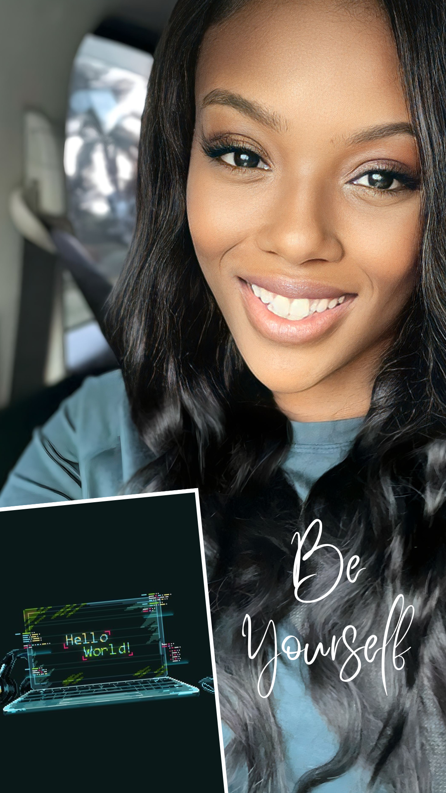

Rayvene Jennings-Allen
Meet the extraordinary multitasking maestro, a real-life superhero in the chaos of life's grand carnival - it's me! A gastronomic adventurer by heart, I savor each bite as if it were a page from an exciting novel, and when the engines roar, you'll find me at the heart of street car races, chasing the thrill of speed. As a full-time student, mom, wife, employee, and business owner, my life is a whirlwind, and I navigate it with the grace of a ballet dancer in a storm. I'm the queen of time management, reigning supreme even under the most intense pressures, though I confess, a bit of procrastination sneaks in when idle hands beckon. Nature is my sanctuary; the beach, my serenity, and sailing is where I set my spirit free. Road trips are my muse, taking me on spontaneous adventures to feed my wanderlust. I am the embodiment of an ambivert, oscillating between the quiet serenity of a cozy night in and the vibrant energy of social gatherings. In the grand symphony of life, I'm the conductor of my own orchestra, blending every note into a harmonious and fun-filled masterpiece. And if, after all that has been said, you wonder what I aspire to be and why I choose this course, well, think no longer; crafting digital dreams in the world of code as a software engineer is simply me.
